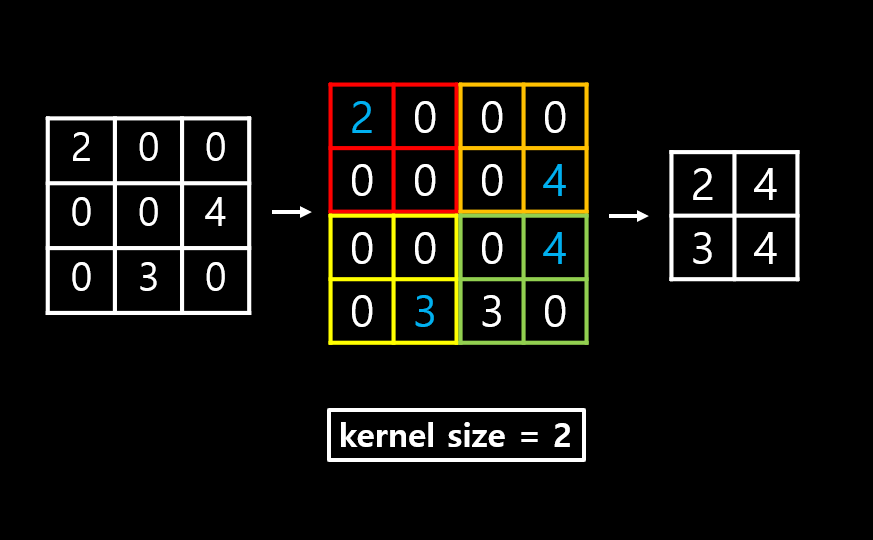
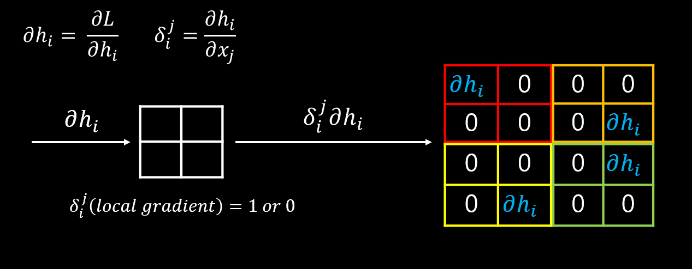

Max Pooling Layer 란?
Feature Map의 최댓값을 전파시키는 Layer 입니다.
maxpool_layer.c
make_maxpool_layer
maxpool_layer make_maxpool_layer(int batch, int h, int w, int c, int size, int stride, int padding) { maxpool_layer l = {0}; l.type = MAXPOOL; l.batch = batch; l.h = h; l.w = w; l.c = c; l.pad = padding; l.out_w = (w + padding - size)/stride + 1; l.out_h = (h + padding - size)/stride + 1; l.out_c = c; l.outputs = l.out_h l.out_w l.out_c; l.inputs = hwc; l.size = size; l.stride = stride; int output_size = l.out_h l.out_w l.out_c * batch; l.indexes = calloc(output_size, sizeof(int)); l.output = calloc(output_size, sizeof(float)); l.delta = calloc(output_size, sizeof(float)); l.forward = forward_maxpool_layer; l.backward = backward_maxpool_layer;
fprintf(stderr, "max %d x %d / %d %4d x%4d x%4d -> %4d x%4d x%4d\n", size, size, stride, w, h, c, l.out_w, l.out_h, l.out_c);
return l;
}
Max Pooling Layer를 만드는 함수입니다.
forward_maxpool_layer
void forward_maxpool_layer(const maxpool_layer l, network net) { int b,i,j,k,m,n; int w_offset = -l.pad/2; int h_offset = -l.pad/2;
int h = l.out_h;
int w = l.out_w;
int c = l.c;
for(b = 0; b < l.batch; ++b){
for(k = 0; k < c; ++k){
for(i = 0; i < h; ++i){
for(j = 0; j < w; ++j){
int out_index = j + w*(i + h*(k + c*b));
float max = -FLT_MAX;
int max_i = -1;
for(n = 0; n < l.size; ++n){
for(m = 0; m < l.size; ++m){
int cur_h = h_offset + i*l.stride + n;
int cur_w = w_offset + j*l.stride + m;
int index = cur_w + l.w*(cur_h + l.h*(k + b*l.c));
int valid = (cur_h >= 0 && cur_h < l.h &&
cur_w >= 0 && cur_w < l.w);
float val = (valid != 0) ? net.input[index] : -FLT_MAX;
max_i = (val > max) ? index : max_i;
max = (val > max) ? val : max;
}
}
l.output[out_index] = max;
l.indexes[out_index] = max_i;
}
}
}
}
}
forward

- kernel size : 2
- stride : 1
- Feature Map에서 kernel size 단위로 sliding window 하며 최댓값을 전파 합니다.
backward_maxpool_layer
void backward_maxpool_layer(const maxpool_layer l, network net) { int i; int h = l.out_h; int w = l.out_w; int c = l.c; for(i = 0; i < hwc*l.batch; ++i){ int index = l.indexes[i]; net.delta[index] += l.delta[i]; } }
backward

- 순전파에 사용 된 최댓값의 위치를 기억하여 해당 위치에만 역전파 연산 값을 보냅니다.
get_maxpool_image
image get_maxpool_image(maxpool_layer l) { int h = l.out_h; int w = l.out_w; int c = l.c; return float_to_image(w,h,c,l.output); }
get_maxpool_delta
image get_maxpool_delta(maxpool_layer l) { int h = l.out_h; int w = l.out_w; int c = l.c; return float_to_image(w,h,c,l.delta); }
resize_maxpool_layer
void resize_maxpool_layer(maxpool_layer l, int w, int h) { l->h = h; l->w = w; l->inputs = hw*l->c;
l->out_w = (w + l->pad - l->size)/l->stride + 1;
l->out_h = (h + l->pad - l->size)/l->stride + 1;
l->outputs = l->out_w * l->out_h * l->c;
int output_size = l->outputs * l->batch;
l->indexes = realloc(l->indexes, output_size * sizeof(int));
l->output = realloc(l->output, output_size * sizeof(float));
l->delta = realloc(l->delta, output_size * sizeof(float));
#ifdef GPU
cuda_free((float *)l->indexes_gpu);
cuda_free(l->output_gpu);
cuda_free(l->delta_gpu);
l->indexes_gpu = cuda_make_int_array(0, output_size);
l->output_gpu = cuda_make_array(l->output, output_size);
l->delta_gpu = cuda_make_array(l->delta, output_size);
#endif
}